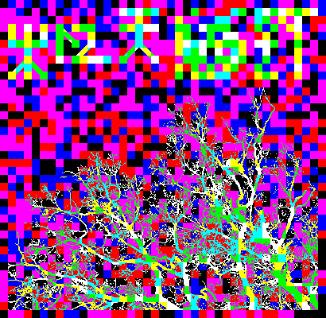
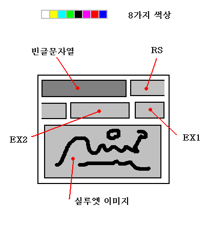
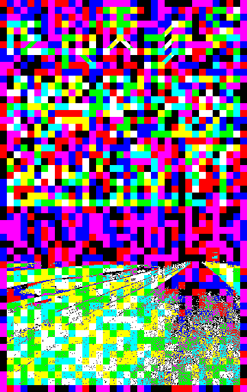

[0.8.1]
큐비코드(Qb-Code, 빈글 매트릭스)¶
큐비코드(빈글 매트릭스)는 빈글문자열과 함께 추가적인 데이타를 2차원 패턴의 이미지로 저장할 수 있는 코드형식이다. 바코드나 큐알코드 처럼 이미지 스캔하여 컴퓨터로 판독할수 있으며 대량의 데이터를 입력할 수 있다. 따라서 바코드 등과 유사한 용도로 사용 가능하다. 이에 더하여 큐비코드는 빈글문자열을 소스코드로 사용하여 명령을 수행할 수도 있다.
여백의 배경으로 실루엣 이미지를 넣을 수 있는데 코드의 기능을 나타내는 용도로 사용하거나 예술적인 표현이 가능하다. 데이타로 시를 넣거나 캘리그라피, 동양화 같은 구도로 이미지와 글을 쨔 넣을 수 있다. 글과 이미지를 조합하여 다양하게 응용할 수 있다.
{kind=link}
- Qb코드
- qC : 빈글이 포함되지 않는 체크패턴
- qCB : 빈글이 포함된 체크패턴
- qB : 빈글이 포함된 흑백이미지
Qb코드의 특징¶
- 가로 세로의 비율을 가변적으로 조정할 수 있다.
- 크기에 제한이 없으므로 데이터의 크기 제한이 없다.
- dictionary 구조의 사용하므로 키가 있는 데이터 여러 개를 함께 저장할 수 있다.
- 실루엣 이미지를 넣어서 코드를 구별하기 좋다.
- 이미지 손상되어도 복구가능하다.
- 이미지가 회전되어도 상관없이 읽을 수 있다.
- 빈글문자열은 파싱하고 데이타와 연계시켜서 특정한 작업을 수행하게 할 수 있다.
Qb코드의 구조¶
빈글 칼라바코드(Qb코드)는 빈글의 문자열과 추가적인 데이타를 함께 묶어서 직사각형 박스에
8가지 색상을 체크패턴으로 데이타를 저장한다.
- 각 셀당 2bit 를 저장한다.
- 헤더: 이미지의 네 귀퉁이 부분에 여러 벌을 복사하여 분산 저장되어 있으며 데이터의 크기, 모드, 체크썸을 저장한다. 이미지의 가로, 세로 픽셀 수가 적으면 헤더의 일정부분을 생략하여 크기를 줄인다.
- 데이터 요소
- CODATA : 각 셀들의 색상으로 저장되는 데이터
- KEUL : 빈글문자열
- EX1 : 빈글문자열의 언어범주 (KEUL 의 부수적 요소)
- EX2 : 추가적인 데이터, 덧붙이는 글, 저작자, 날짜 등
- SLT : 실루엣이미지, 데이터에 아무런 영향도 주지 않는다.
- RS : Keul 문자맵의 복구를 위한 자동 추가 데이터. 여백이 충분할 때만 사용됨
- CODATA 에서 용량이 남을 때는 가능한한 복구를 위한 데이타로 사용한다.
생성 스크립트¶
python qbmake.py -h
usage: qbmake.py [-h] [-u INPUT] [-w HXW] [-l LIMIT] [-r {0,1,2,3}] [-m RSM]
[-k KEUL] [-e [KEY=VAL [KEY=VAL ...]]] [-s SLT] [-v]
[-q QBMODE] [-o OUT] [-b] [-i] [-t]
[KEY=VAL [KEY=VAL ...]]
Make Qb Code, 빈글 바코드 생성
positional arguments:
KEY=VAL 데이터
optional arguments:
-h, --help show this help message and exit
-u INPUT, --input INPUT
base input script [*.py] => 'DATA = ...'
-w HXW, --hxw HXW 픽셀크기 [기본값 10]
-l LIMIT, --limit LIMIT
x축 한계 [기본값 30]
-r {0,1,2,3}, --ro90 {0,1,2,3}
90도 회전 횟수
-m RSM, --rsm RSM reedsolo sym
-k KEUL, --keul KEUL 빈글 문자열
-e [KEY=VAL [KEY=VAL ...]], --ex2 [KEY=VAL [KEY=VAL ...]]
ex2 데이터
-s SLT, --slt SLT 실루엣 이미지
-v, --invert-slt 실루엣 이미지반전
-q QBMODE, --qbmode QBMODE
QBMODE: KEUL[1] NONE[0]
-o OUT, --out OUT 출력 이미지 경로
-b, --border 결과 이미지 외곽
-i, --invert 결과 이미지반전
-t, --test 결과 데이타 검증 테스트
샘플¶
python -m pinkeul.utils.qbmake "하늘과강과길이만나는곳,영겁의시공간을우리들의세포가떠돌던그이상도이하도아닌먼지자욱한이곳" -r 0 -l35 -e 먼지와길 20190303 -k ZqWPeuPZMOAWxpWUFeUjWwmM -s https://3.bp.blogspot.com/-byHUwOTZJkg/XHy1s8Dj4VI/AAAAAAAAAno/mHw0Zt0IoswrDOaVtI0-NJHDisof3nx5QCLcBGAs/s1600/SAM_3598.JPG -o $dust-c.png
python -m pinkeul.utils.qbmake "두 개의 바퀴로 지구를 굴리니 이르지 못할 곳이 없네" -r 2 -l40 -k vkGvkCZqWPeu -e '부들과자전거' -s $byc.png -o $byc-c.png
py3 -m pinkeul.utils.qbmake "난초의 꿈과 나비의 꿈이 만나는 곳에 꽃이 피었네" -r 3 -l55 -k FAxiXQRMECEAtwWqYAuHIvHMWjWqYAuHI -e '난과나비' -s $nan.png -o $nan-c.png